visualize houdini sensor heatmaps on the web
restAPI
sensor 1 ┌─────────┐ │ │ │ │ │ │ │ │ │ │ └─────────┴── sensor 2 ┌─────────┐ │ │ │ │ │ │ │ │ │ │ └─────────┴── sensor 3 ┌─────────┐ │ │ │ │ │ │ │ │ │ │ └─────────┴── sensor 4 ┌─────────┐ │ │ │ │ │ │ │ │ │ │ └─────────┴── sensor 5 ┌─────────┐ │ │ │ │ │ │ │ │ │ │ └─────────┴──
│
│
│
│
│
post request │ hosted on personal linux system or cloud server (postData in the cloud)
──────────────────────┐ │
│ │ ┌─────────────────────────────────────────────────────────┐
│ │ │ │
│ │ │ influxData │
│ │ │ │
│ │ │ ┌─────────────────────────────────────────────────────┐ │ 1. sensors (arduino/dramco UNO/ lillyGO)
│ │ │ │ │ │ send sensordata (temp/luminosity/position..)
post request │ │ │ │ ┌───────────────────┐ ┌─────────────┐ │ │ over WIFI to a REST API in influxData.
────────────────────┐ │ │ │ │ │ │ │ │ │ │
│ │ │ │ │ │ restAPI │ │ influxDB │ │ │ this can happen in C++ through a POST request
│ │ │ │ │ │ │ │ │ │ │
│ └──────────┼─────┼─┼───┼───► │ │ │ │ │
│ │ │ │ │ │ │ │ │ │
└────────────┼─────┼─┼───┼───► │ │ │ │ │ 2. inside influxData, the restAPI sees what
│ │ │ │ ────┼──────────┼───► │ │ │ the sensors send them, is it POST request,
post requestt ┌───────────┼─────┼─┼───┼───► │ │ │ │ │ than checks the REST API the requirments.
─────────────────────┘ │ │ │ │ │ │ │ │ │
┌──────────┼─────┼─┼───┼───► ◄───┼──────────┼──── │ │ │ if they comply, then, the sensordasta is
│ │ │ │ │ │ │ │ │ │ processed and stored into the influxDatabase
│ ┌────────┼─────┼─┼───┼───► │ │ │ │ │
│ │ │ │ │ │ ▲ ▲ │ │ │ │ │
│ │ │ │ │ │ │ │ │ │ │ │ │ 3. if the request is a GET request, then
│ │ │ │ │ └───────┼──┼────────┘ └─────────────┘ │ │ the database will send the corresponding data
post request │ │ │ │ │ │ │ │ │ to the requested party. e.g. a laptop or phone
──────────────────────┘ │ │ │ └───────────┼──┼──────────────────────────────────────┘ │
│ │ │ │ │ │
│ │ └─────────────┼──┼────────────────────────────────────────┘
│ │ │ │
│ │ │ │
│ │ │ │
│ │ │ │
post request │ └───────────────────┼──┼──────────────────────────────────────────────────────────────────────────
────────────────────────┘ │ │
│ │
│ │
│ │ a cloud server or local machine runs influxData
│ │ inside influxData is a RESTapi that can respond to requests
│ │ the REST api can communicate with the database and store or retrieve data
│ │ the REST api can now send or retrieve data to or from client
│ └──────────────────┐
get request │ │ get request
┌────────────┴─────┐ ┌───────┴──────────┐
│ │ │ │
│ │ │ │ REST API = REST = representational state transfer
│ │ │ │ API = application programming interface
│ │ │ │
│ │ │ │ does not store any context or history,
│ │ │ │
├──────────────────┤ ├──────────────────┤
│┼┼┼┼┼┼┼┼┼┼┼┼┼┼┼┼┼┼│ │┼┼┼┼┼┼┼┼┼┼┼┼┼┼┼┼┼┼│
└──────────────────┘ └──────────────────┘
laptop smartphone
fase progression
fase 1
send random data to the restAPI in influxdb and return it on a different computer fase 2
send sensor data to the restAPI in influxdb and return it on a different computer fase 3
send sensor data to the restAPI in influxdb and display it on a website fase 4
send sensor data to the restAPI in influxdb and return it on a different computer that runs a houdini visualisation fase 5
send sensor data to the restAPI in influxdb and return it on a different computer that runs a houdini visualisation, makes a render and posts it to influxDB, and post the image and the data on a website fase 6
fase 5 + drive a camera controller from the website to influxDB and use it to drive the camera in houdini fase 7
fase 5 + drive a camera controller from the website to influxDB and use it to drive the camera in houdini which uses that view to display the sensor heatmap 